Sometimes, a journey far from home can unexpectedly transport you back to cherished memories. Such was my experience during my two-day sojourn in Seattle, the Emerald City. Seattle’s urban charm, combined with its vibrant market scene, immediately stirred recollections of bustling “Sabzi Bazaars” back home in India, igniting a sense of nostalgia and familiarity that added warmth to my adventure.
But, let’s start from the beginning.
Starbucks Reserve
The first day kicked off with a visit to Starbucks Reserve. This is no ordinary Starbucks outlet; it is an immersive and dramatic expression of coffee passion. The highlight of the experience was tasting their latest offering, Oleato — a curious yet delightful combination of latte with olive oil. It was a warm, aromatic experience that truly woke up my senses, preparing me for the adventures ahead.
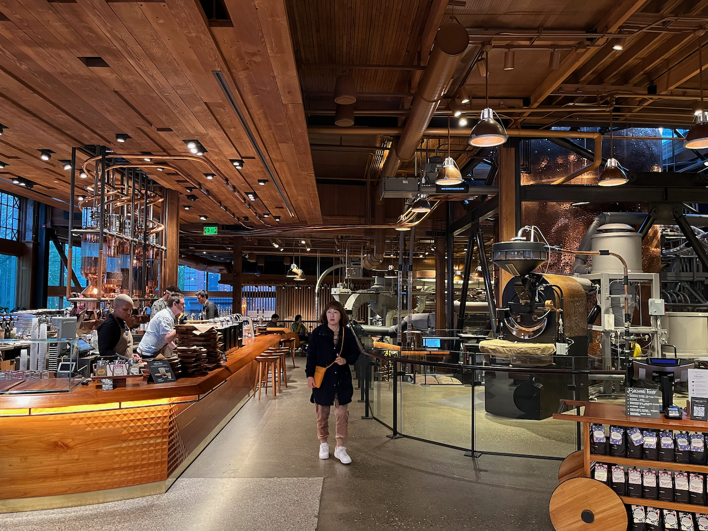
Starbucks Reserve is a special roastery preparing “reserve” products: what Starbucks considers its rarest and best-quality coffees, usually single-origin coffees. There are six locations worldwide: Seattle, Shanghai, Milano, Toko, Chicago, and (newest one) New York. In addition to coffee, they also sell coffee-cocktails.
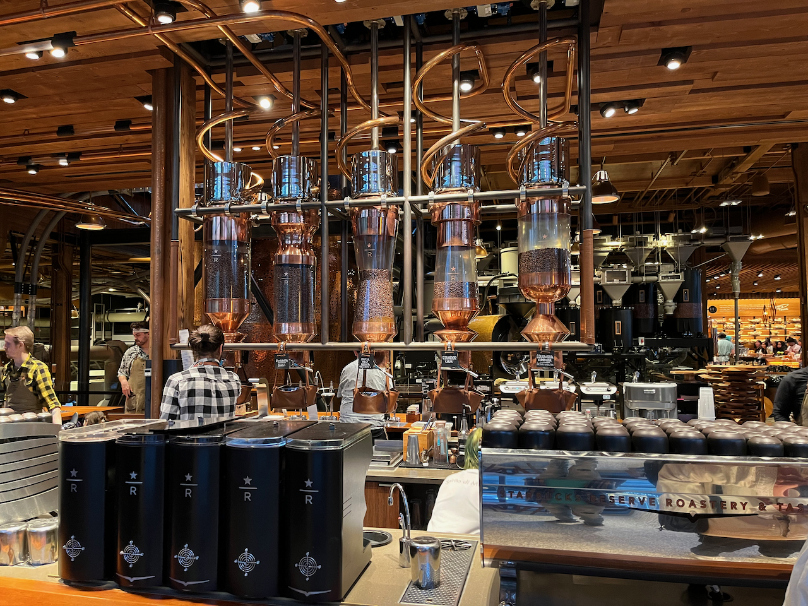
Starbucks uses these big machines to roast and grind beans in store. I am not a big fan of Starbucks; they make coffee-flavoured drinks, not coffee. But I liked Starbucks. They had single-origin coffee, a well made espresso and good tasting latte. Here, the meticulous attention to detail and unwavering commitment to the art of coffee-making is palpable.
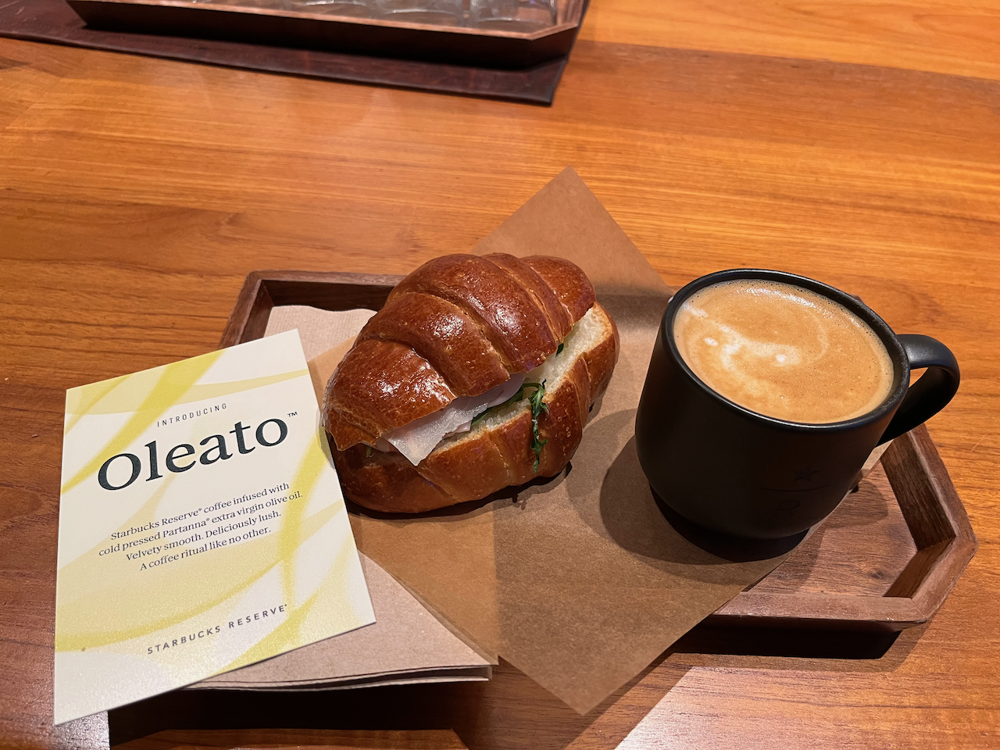
Starbucks’ ex-CEO Howard Schultz was visiting Sicily, Italy when he met several locals drinking olive oil as their morning ritual. He followed along, adding it to his morning coffee. He had an idea: why not mix them together? Soon after, Starbucks launched Oleato. Their penchant for innovation is another factor that sets them apart, continually pushing the boundaries of what’s possible in the realm of coffee.
Seattle Great Wheel
In the evening, a ride on the iconic Seattle Great Wheel offered a stunning perspective on the city. Perched right on the Pacific Ocean, the giant wheel offered a panorama that was an absolute feast for the eyes: the twinkling Seattle skyline in one direction, the vast expanse of the ocean shimmering in the other. As the wheel slowly ascended, the breathtaking view was gradually unveiled, making for a memorable experience.
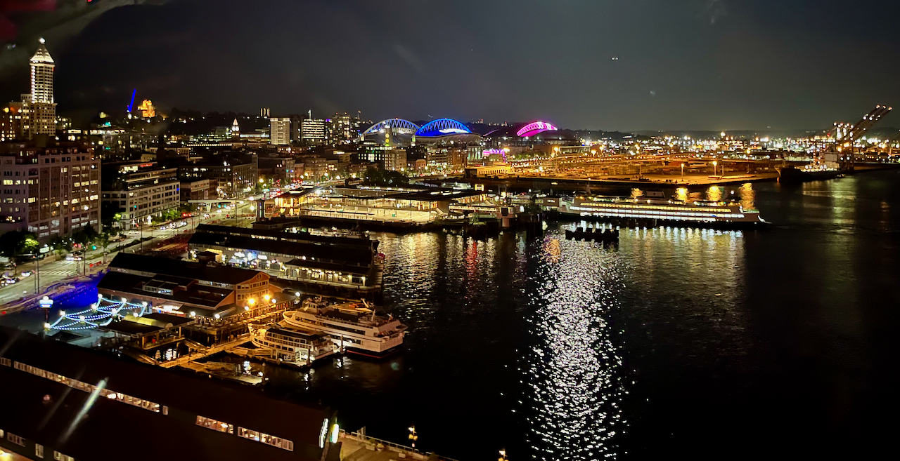
.png)
Spicy Ramen
The day ended on a flavorful note at Wasabi Sushi & Izakaya. Here, I ordered a bowl of ramen, daringly requesting it to be “Thai spicy”. The waitress and the chef did an amazing job, creating a delicious, fiery bowl of ramen that tickled my taste buds with just the right level of spice.
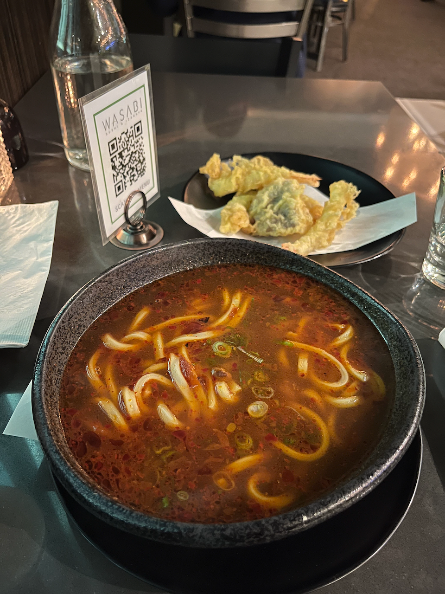
It is seriously hard to get spicy, flavourful food in the US. Some places that manage to strike the balance, deserve a gold medal. 🏅 Like this Japanese place. The harmony of flavors and textures in the ramen was perfect. It was rich, spicy, and comforting – just what I needed to end the day.
Meeting Bob and Jenny
I also met Bob and Jenny, friends of friend. Bob grew up in India and we had Thupka at The Everest Kitchen. Thupka is a Tibetean soupy noodles that’s super popular in India. I think I was having it after 4-5 years.
Chihuly Garden and Glass
The next day was all about exploring Seattle’s cultural side. It started with a visit to the Chihuly Garden and Glass museum, a place where the art of Dale Chihuly comes alive in a spectacular fashion. The vibrantly colored glass sculptures, beautifully intertwined with nature, offered a visual spectacle unlike any other.
The way light played off the different shapes and hues was simply mesmerizing, making each piece a captivating work of art.
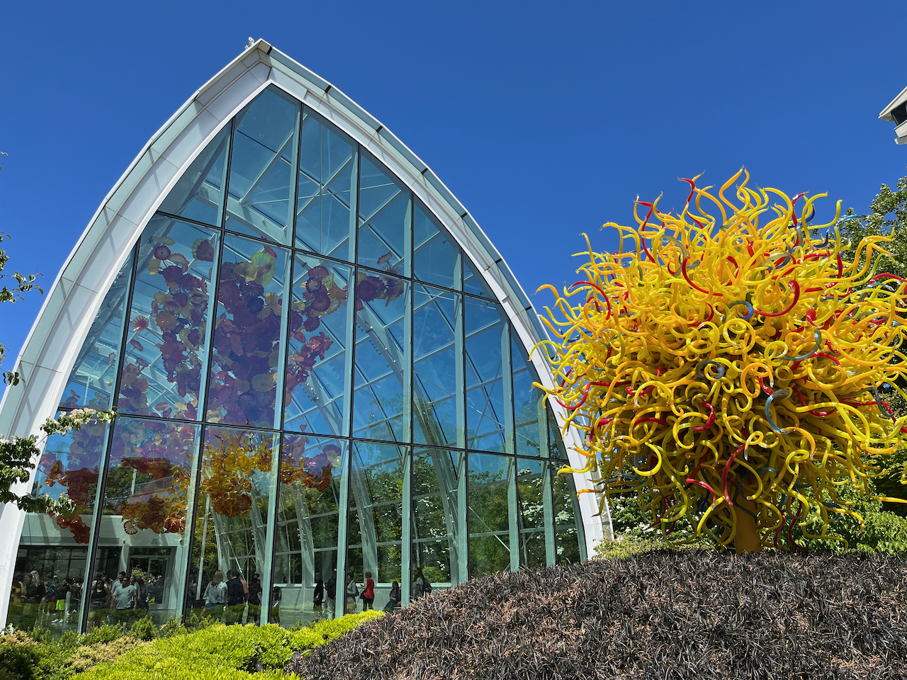
Museum of Pop Culture
From there, I moved on to the Museum of Pop Culture, where the essence of music, science fiction, and popular culture is beautifully captured. While the Space Needle was tempting, the 1.5 hour wait-time made me decide to save it for another visit. Still, from where I stood, the imposing structure was a sight to behold, its silhouette against the sky a picture of modern ingenuity.
Fun fact: Space Needle was also constructed for the World’s Fair — much like Sunsphere in Knoxville’s World Fair Park.
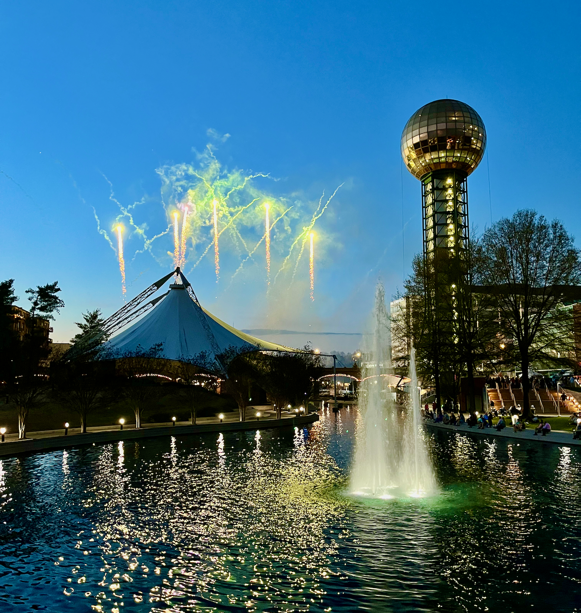
Knoxville’s World Fair Park traces its origins tracing back to the 1982 World’s Fair. A significant event themed “Energy Turns the World,” the fair put the city of Knoxville, Tennessee, on the global stage, attracting 11 million visitors from around the world. Knoxville’s Sunsphere (81m) is around half the height of Space Needle (184m).
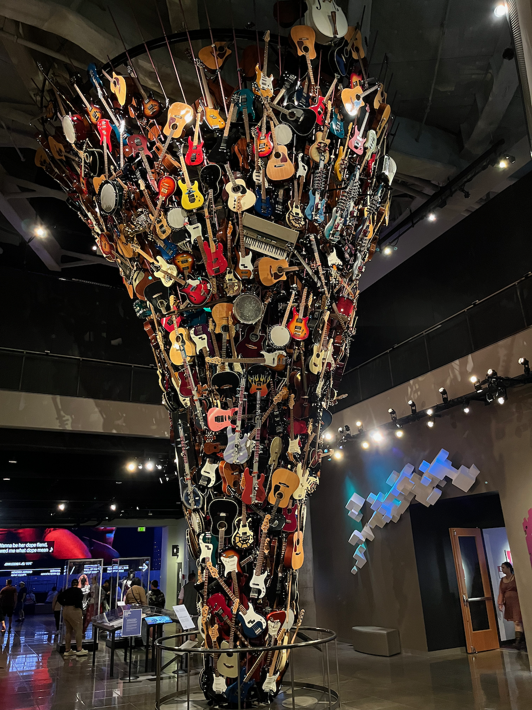
Museum of Pop Culture is an interesting exhibition of artists, movies and sets. They have an exhibition of electric guitars from various rock artists.
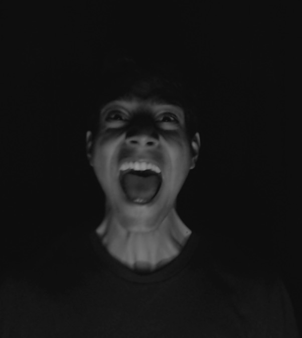
In one of their rooms, you could scream at the top of your lungs and they will send you a pic of how scared you look. Do I look like I just lost my limbs?
Pike Market
After immersing myself in the city’s culture, it was time to explore its lively marketplace — Pike Market — the best part of Seattle. The market was a sensory overload, with the sights, sounds, and smells of fresh produce, handmade crafts, and bustling crowds. I bought and savored some fresh berries, cherries, and spicy mangoes, the flavors a wonderful testament to the city’s love for fresh, local produce.
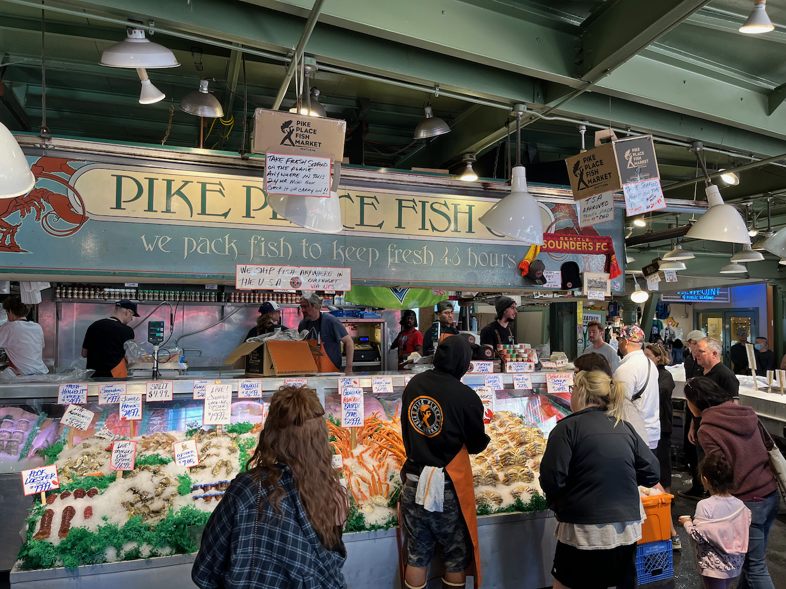
The crown jewel of my reminiscence was Pike Market, where the vivid display of fresh produce, the bustling crowds, and the lively shouts reminded me of my mom’s haggling in the Indian Sabzi Bazaars (Vegetable Market). It was like strolling through a vivid watercolor painting, where each stroke added an exciting nuance. As I bit into juicy cherries and spicy mangoes from the market, it was as if I was tasting memories of home. I couldn’t help but feel a sense of warmth and familiarity amid the hustle and bustle, despite being so far from home.
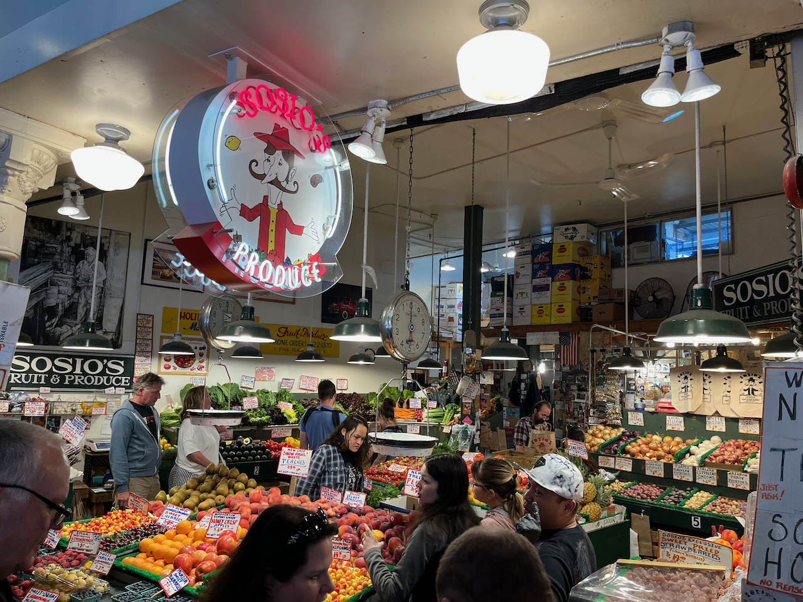
First Starbucks Store
One of the distinctive highlights of Seattle the first-ever Starbucks store, located at Pike Place Market. This historic cafe, adorned with its nostalgic and original brown logo, traces its origin back to 1971. The 45-minute wait to enter this legendary store only added to the anticipation and allure. However, as I finally walked through the doors and into its vintage ambience, steeped in history, I was somewhat disappointed when I tasted the latte — it was too milky. Although the coffee didn’t live up to my expectations, the charm of the place was undeniable. I couldn’t help but appreciate its significance in the world of coffee.
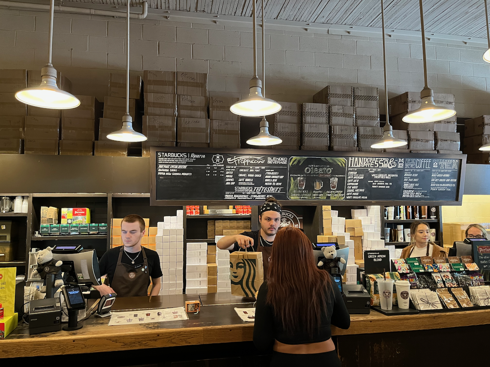
Starbucks’ first store. Although the store is 52 years old, the menu is modern. Alas! I would’ve loved what they were serving, how they were serving.
Amazon’s Cool Office and Vanmoof Store
A walk around Seattle gave me glimpses of the city’s modern architectural marvels like Amazon’s stunning office, and the slick Vanmoof store.
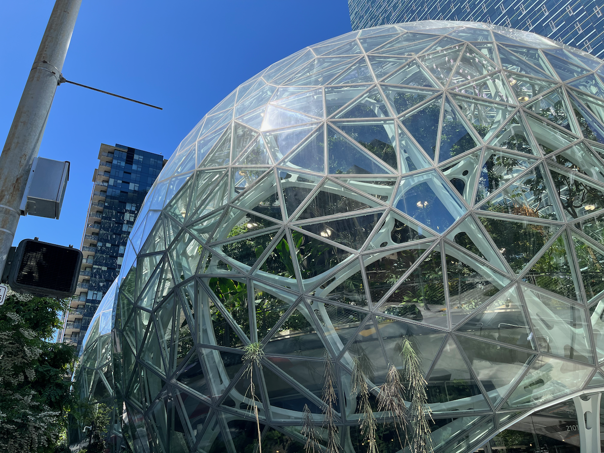
Amazon made this arboretum for its employees: so that they could visit greenery at any time.
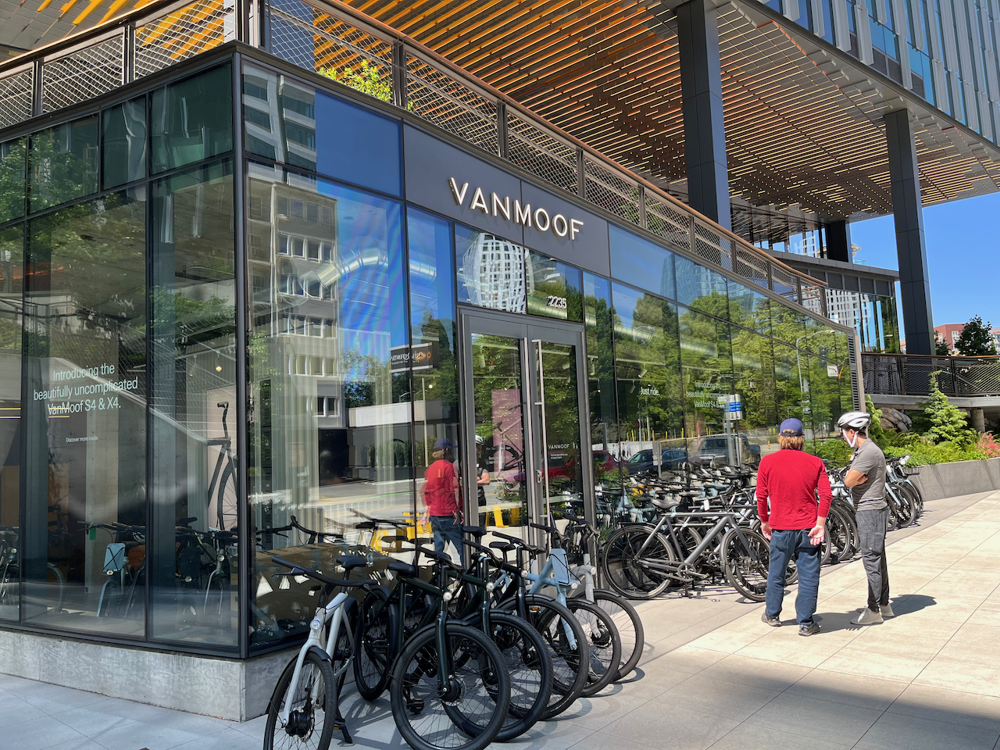
Vanmoof makes the coolest electronic bikes. This is a hill I’m ready to die on. Probably not.
Seattle Aquarium
Can you identify this fish?
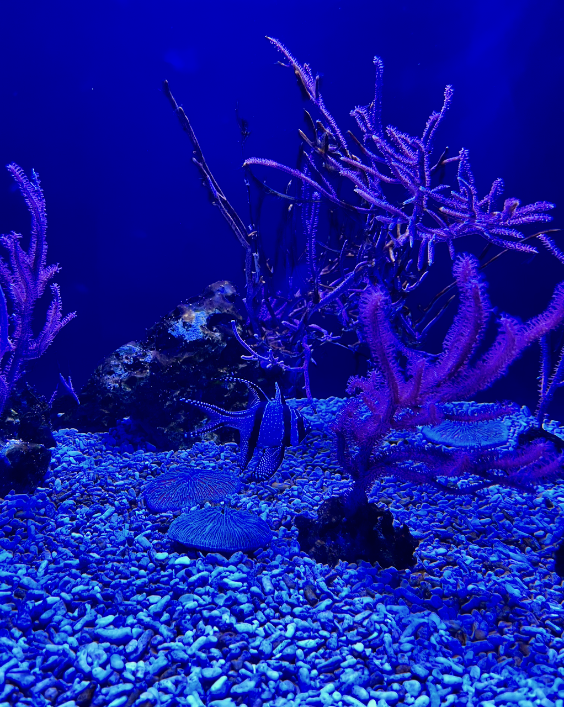
Originally found in Indonesia, it is considered endangered in its hometown. Subsequently, it was introduced worldwide and is considered invasive in most waters. Its breeding begins with a 40 minute long dance by the the female upon which they release around 30-40 eggs. These eggs are eaten by the males, who fertilise them in their mouth. When they’re ready, the males spit them out of their mouth, into their independent life.
Fish footnotes for answers.
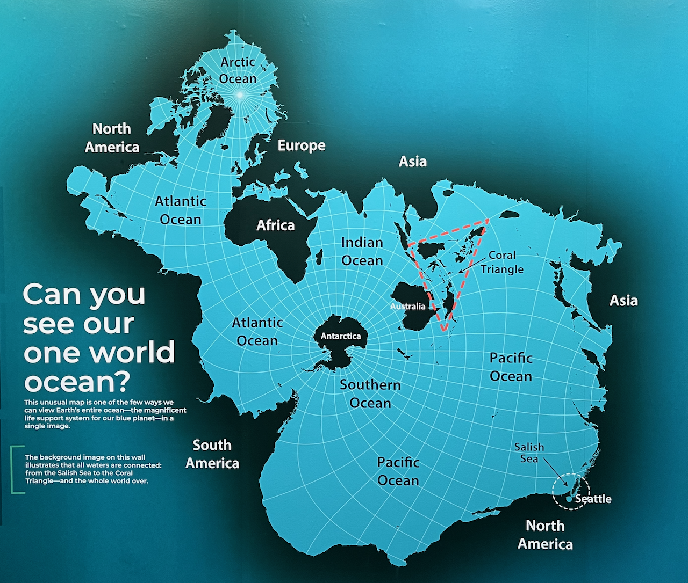
There aren’t many maps of the world’s seas. NASA’s projections on rising sea levels is an interesting one.
The mesmerizing underwater world raised some intriguing questions, such as the prevalence of red colour among underwater organisms. Why are coral reefs red? Why are so many fishes red?
I learned that this is due to red being the first color to be filtered out as you go deeper underwater, providing a clever form of camouflage. This makes the underwater life “invisible” and thus protects them from threats and preys.
I was also fascinated to discover that Orcas, those majestic creatures, are the largest members of the dolphin family. Their intelligence was a revelation, particularly their ability to form cohesive groups, or ‘pods’, to counter threats to their natural habitat — even attacking fisherman ships to shoo them away. Orcas Filmed Destroying Ship’s Rudder in Shocking Clip: ‘Surrounded’ (msn.com)
While we’re on the subject of aquariums, here’s Mr Hoshino explaining what is at the bottom of the sea is to Mr Nakata in Kafka on the Shore:
Anyhow, there’s all kinds of stuff at the bottom of the sea. The animals are different than us—they take oxygen from the water and don’t need the air to breathe. There’re some beautiful things down there, some delicious things, plus some dangerous things. And things that’d totally creep you out. If you’ve never seen it, its hard to explain, but it’s completely different than what we’re used to. Way down at the bottom it’s totally dark and there are some of the grossest creatures you’ve ever seen.
Meeting Neha
During my stay in Seattle, I was lucky to have my sister Dr. Swati Sonal joining the trip. While she was engaged in a conference during the day, our evenings were filled with lively conversations and laughter. Siblings your age who you grew up with >>. She is an aspiring cancer surgeon at the University of Minnesota, and getting to see her after a long time was truly a delight. Her stories about her work and passion for her field always filled me with inspiration and pride.
We were there as she was attending a conference, but we made the most of our evenings together, swapping stories. Ah, the joy of being with siblings who are the same age as you, those partners in crime with whom you’ve shared countless childhood adventures. It’s an unparalleled experience, really.
Neha is a budding cancer surgeon at the impressive University of Minnesota. Her visit was a breath of fresh air, a welcome break from our respective busy lives. Last I had met her on my trip to Boston in April, where she showed me around Ether Dome and more.
She would passionately recount tales of her work, her experiences in the medical field, her determination in her pursuit of helping those in need. Her words were always filled with an infectious love for her profession, and it left me feeling both inspired and incredibly proud.
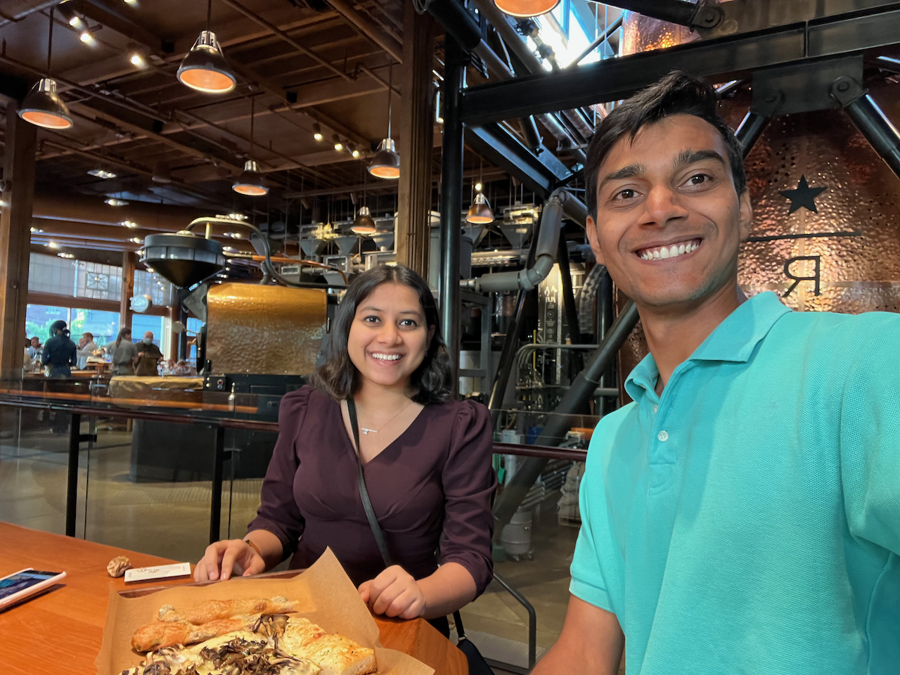
She doesn’t drink coffee but finished that pizza whole.
Conclusion
In the end, my journey to Seattle, the Emerald City, was a rich tapestry of experiences that transcended the ordinary. From savoring unique flavors like Oleato at Starbucks Reserve to witnessing the awe-inspiring marine life at the Seattle Aquarium, each moment held a discovery. I walked through the lively, colorful corridors of Pike Market, found myself captivated by the artistry of the Chihuly Garden and Glass, and stood in the original Starbucks store.
Modern marvels like Amazon’s office and the Vanmoof store sat juxtaposed against historical landmarks, a testament to Seattle’s harmonious blend of the past, present, and future. It truly was an unforgettable voyage that I’d recommend to anyone yearning for a diverse and enriching experience.